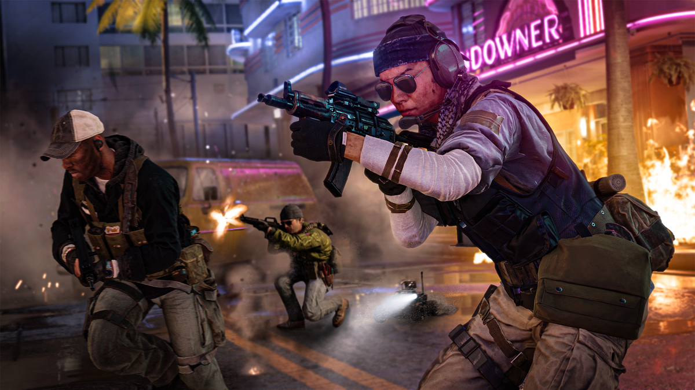
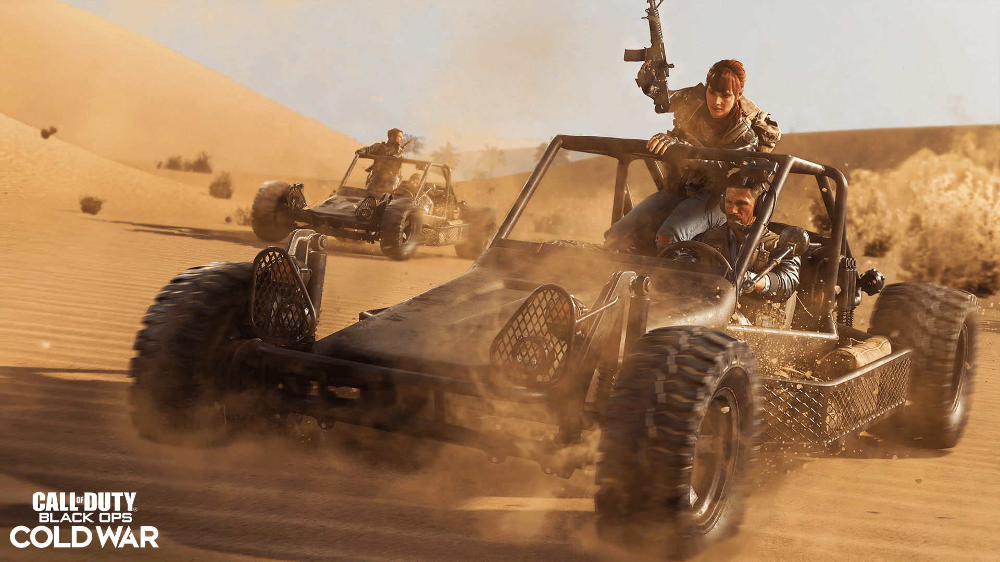
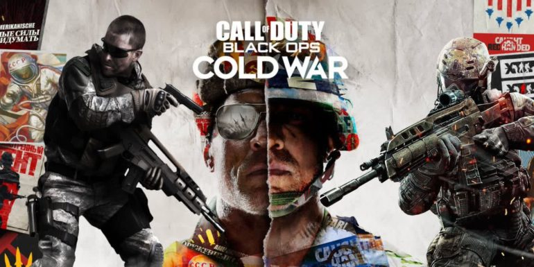

The Call of Duty franchise is one of the most popular in gaming history.
But fans have become disillusioned with the series in recent times.
'Modern Warfare' was not well received by fans.

While Warzone and the campaign were a success, many were left underwhelmed with the Multiplayer.
Call of Duty: Cold War was looking to build on the failures of its predecessor.

It's now been out for two weeks, with fans having ample opportunity to get accustomed to the game.
But what do fans think of the latest edition of the Call of Duty series?
Well, they don't feel too strongly about it, it would seem.
In fact, out of 602 users that have ranked the Playstation 4 version of the game on Metacritic, the game has been rated just 3.4/10. Ouch.
While there are a few good reviews for the game, there are many that rated the game just 0/10.

We have looked at the reviews and picked out some of the most brutal below:
'Dave97' said: "Worst call of duty in history, SBMM is ruining the game. I'm very disappointed".
Betterthanign' ranted: "Game is an utter mess, less content than ever before and has horrific levels of sbmm in multiplayer with no ranked mode. They insist on keeping it thinking it will make them more by crushing the skill gap and it’s a joke!!!"
'JayJitsu13' stated: "Multiplayer is just trash. Horrible lag, disconnect issues, atrocious framerate, and just overall terrible. Campaign is decent, until you get disconnected. Zombies is decent, when you don't get disconnected. Just too many problems for a AAAtitle. Don't waste your money."
'Phoenix123' said: "Rushed out by year for the sake of money, never really anything groundbreakingly different about the game. This franchise has declined a lot from its prime, kinda sad to see."
And KrolMyruhNov wrote: "I'm actually p***ed off I spent money on this buggy, unfinished, cash grab. Do not buy it. Go play something else that's worth your time and money."
Some absolutely brutal reviews.
Let's hope the developers roll out some updates soon, or the game is going to fizzle out very quickly.
Watch the multiplayer trailer here: